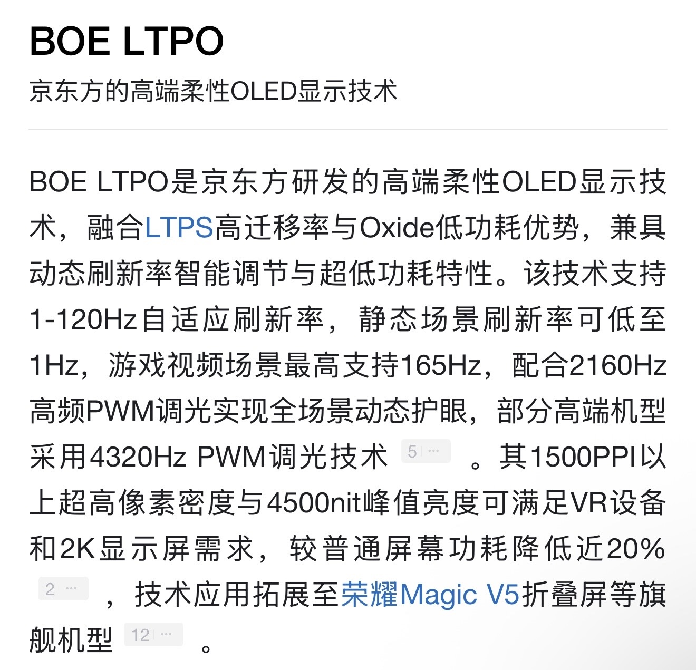
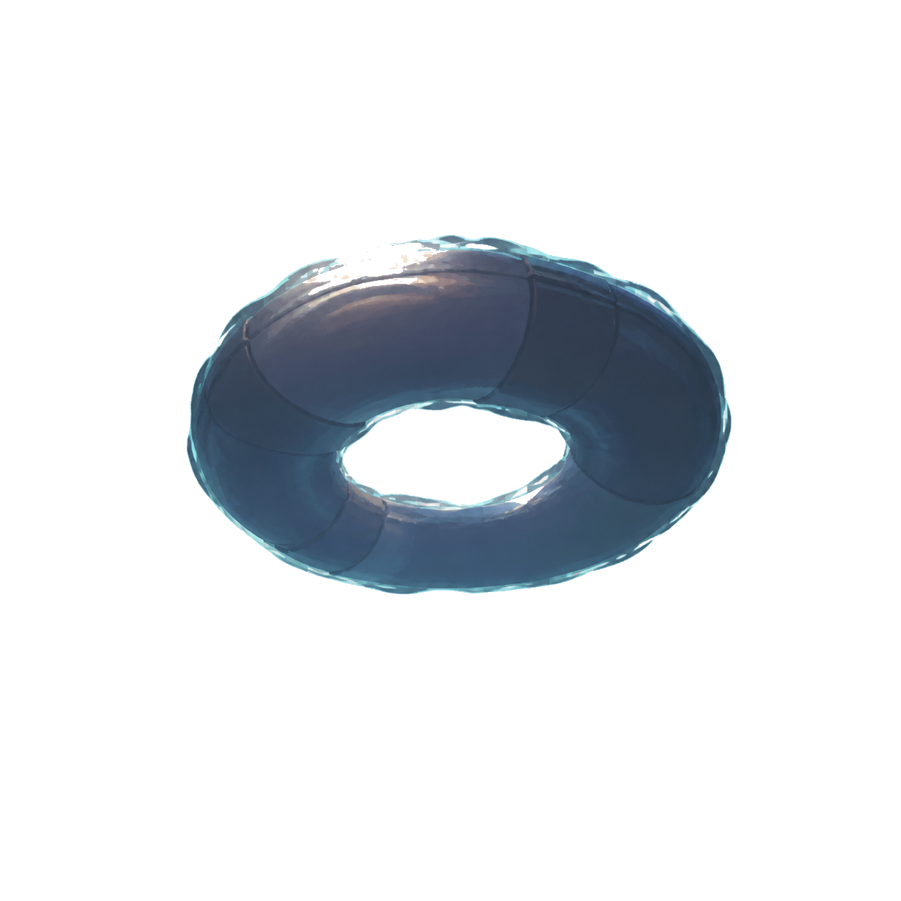
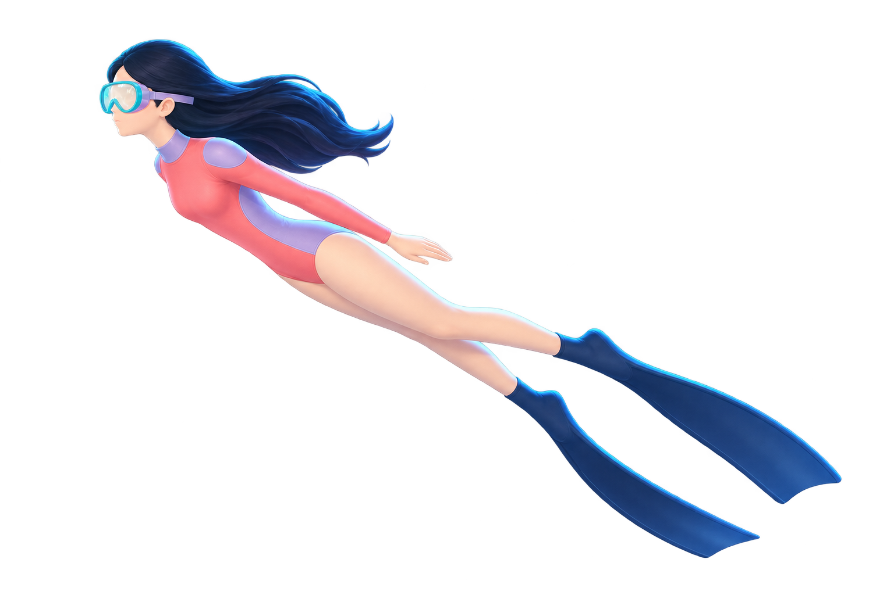

01
认知基建
第一步，通过认知基建填补 LTPO 认知空缺。

PROFESSIONAL INTRO刘欣冉公关传播与内容策划基于目标与需求，理解信息、建立逻辑，
搭建传播路径，形成有效表达。从信息出发，以抵达受众为终点。
BOE（京东方）公关传播2023.04–至今
快手科技垂类运营2021.04–2023.01
墨尔本大学全球媒体传播硕士2018.07–2020.12
首都师范大学公共事业管理本科2014.09–2018.06
CASE CONTENT COMING NEXT
LTPO
LTPO 是新一代 OLED 技术，通过动态刷新率等技术能力，为用户带来超低功耗、超健康护眼、超流畅显示的体验。
市场对 LTPO 的认知有限，技术优势与普通用户能够理解的实际体验之间缺少连接。
在有限的传播资源下，如何让消费者理解并认可技术价值，并进一步影响其消费决策，是项目真正需要解决的问题。
技术很好，但消费者为什么要在意？围绕 LTPO 从技术认知走向用户感知与价值认可，通过填补认知空缺建立技术理解，再以场景化、故事化的内容集中释放技术价值，让抽象的技术优势转化为消费者可理解、可感知的实际体验。
第一步，通过认知基建填补 LTPO 认知空缺。

以系列短剧为载体，将 LTPO 技术与终端产品相结合，把超低功耗、超健康护眼、超流畅显示等技术优势植入真实使用场景，直击用户痛点，通过剧情转化为可感知的用户体验。
北京电视台 · 四集系列短剧
获奖融媒创作
牡丹奖 · 好创意
市场反馈LTPO 相关关键词搜索与市场提及较项目前有所提升
业务反馈获得业务与客户认可，并进入下一轮合作

DEPTH006m
